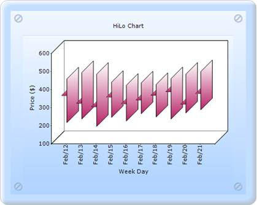

To create a HiLoOpenClose chart with OpenCloseDrawMode through Builder:
1. In Controller, return view to the corresponding View page.
|
[C#] public ActionResult SimpleChart() { return View(); }
|
2. In the View Page, invoke the ChartBuilder by using the control ID as the first argument.
3. Add the Series to the ChartModel and set the series type to HiLoOpenClose, and add the Points to the series and set the style.
4. Set the ChartModel and ChartArea properties.
|
View [ASPX]
<%=Html.Chart("chart_Model").Text("HiLo Chart").Series(series => {
series.Add() .Name("FT") .Type(Syncfusion.Windows.Forms.Chart.ChartSeriesType.HiLoOpenClose) .Points(points => { DateTime start = new DateTime(2006, 2, 12);
points.Add(start.AddDays(0), 456, 214, 364, 386); points.Add(start.AddDays(1), 491, 234, 321, 378); points.Add(start.AddDays(2), 482, 193, 302, 352); points.Add(start.AddDays(3), 437, 243, 354, 391); points.Add(start.AddDays(4), 421, 223, 317, 367); points.Add(start.AddDays(5), 434, 263, 339, 385); points.Add(start.AddDays(6), 425, 245, 365, 396); points.Add(start.AddDays(7), 457, 234, 385, 398); points.Add(start.AddDays(8), 482, 267, 316, 389); points.Add(start.AddDays(9), 496, 285, 374, 399); }) .ConfigItems(configitems => { configitems.HiLoOpenCloseItem(item => { item.DrawMode(Syncfusion.Windows.Forms.Chart.ChartOpenCloseDrawMode.Open); }); }); })
//---------Set the ChartModel and ChartArea properties that you want------
%> |
|
View [cshtml]
@{ Html.Chart("chart_Model").Text("HiLo Chart").Series(series => {
series.Add() .Name("FT") .Type(Syncfusion.Windows.Forms.Chart.ChartSeriesType.HiLoOpenClose) .Points(points => { DateTime start = new DateTime(2006, 2, 12);
points.Add(start.AddDays(0), 456, 214, 364, 386); points.Add(start.AddDays(1), 491, 234, 321, 378); points.Add(start.AddDays(2), 482, 193, 302, 352); points.Add(start.AddDays(3), 437, 243, 354, 391); points.Add(start.AddDays(4), 421, 223, 317, 367); points.Add(start.AddDays(5), 434, 263, 339, 385); points.Add(start.AddDays(6), 425, 245, 365, 396); points.Add(start.AddDays(7), 457, 234, 385, 398); points.Add(start.AddDays(8), 482, 267, 316, 389); points.Add(start.AddDays(9), 496, 285, 374, 399); }) .ConfigItems(configitems => { configitems.HiLoOpenCloseItem(item => { item.DrawMode(Syncfusion.Windows.Forms.Chart.ChartOpenCloseDrawMode.Open); }); }); }).Render();
//---------Set the ChartModel and ChartArea properties that you want------
}
|
5. Build and run the application, to get the following output:

Figure 249: HiLoOpenClose chart with OpenCloseDrawMode as Open